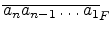

Little John studies numeral systems. After learning all about fixed-base systems, he
became interested in more unusual cases. Among those cases he found
a Fibonacci system, which represents all natural numbers in an unique way
using only two digits: zero and one. But unlike usual binary scale of notation,
in the Fibonacci system you are not allowed to place two 1s in adjacent positions.
One can prove that if you have number
N = 
in Fibonacci
system, its value is equal to
N = an . Fn + an-1 . Fn-1 +...+ a1 . F1
,
where Fk
is a usual Fibonacci sequence defined by
F0 = F1 = 1
,
Fi = Fi-1 + Fi-2
.
For example, first few natural numbers have the following unique representations in
Fibonacci system:
John wrote a very long string (consider it infinite) consisting of consecutive
representations of natural numbers in Fibonacci system. For example, the first
few digits of this string are 110100101100010011010...
He is very interested, how many times the digit 1 occurs in the N
-th prefix of
the string. Remember that the N
-th prefix of the string is just a string consisting of
its first N
characters.
Write a program which determines how many times the digit 1 occurs in
N
-th prefix of John's string.
The input file contains several test cases, each of them as described below.
The input contains a single integer N
(
0 N1015
).
For each test case, output a single integer -- the number of 1s in N
-th prefix of John's string -- on a line by itself.
N1015
).
For each test case, output a single integer -- the number of 1s in N
-th prefix of John's string -- on a line by itself.
21
10